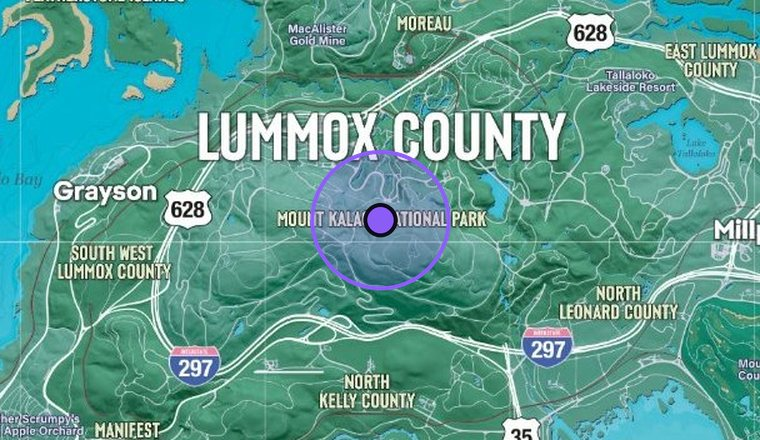

Pedras e cratera no Mount Kalaga
No alto do Mount Kalaga tem pedras em pé, como num círculo antigo, e uma cratera de meteoro.
Onde fica

📷 Ainda sem print deste easter egg. Tem um? Manda pra gente e leva o crédito.
📍 Topo do Mount Kalaga
Como encontrar
- Suba até o topo do Mount Kalaga.
- Procure as pedras em pé e a cratera.
Fontes e créditos
Adicionado em 19/11/2026.